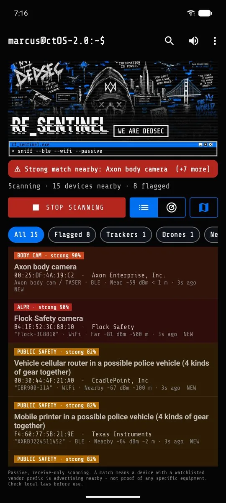
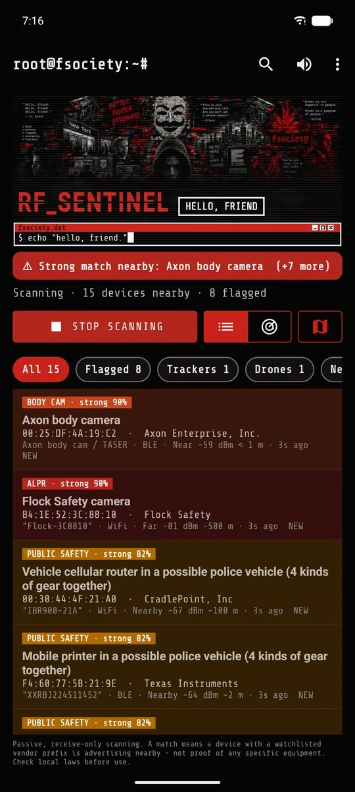
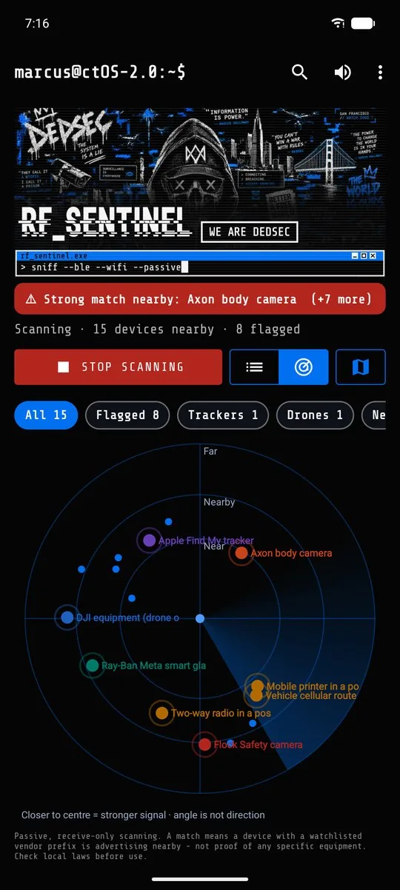
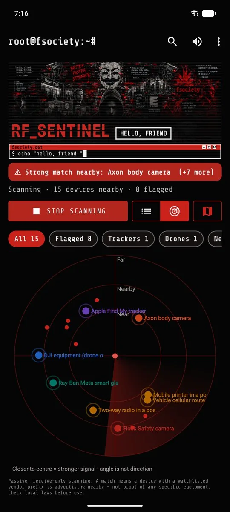
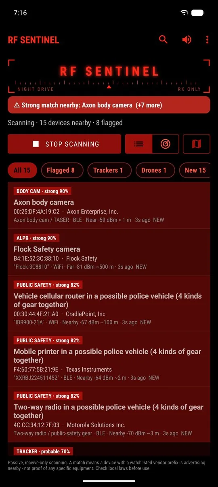
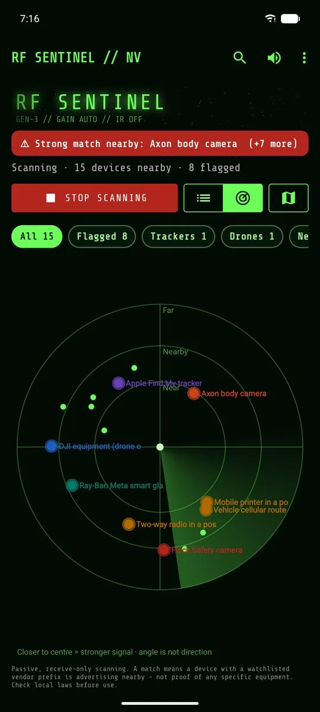
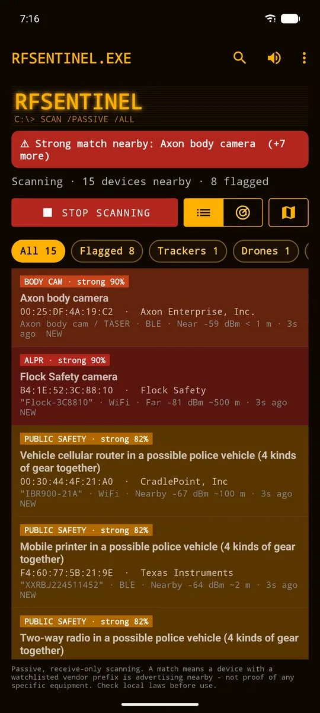
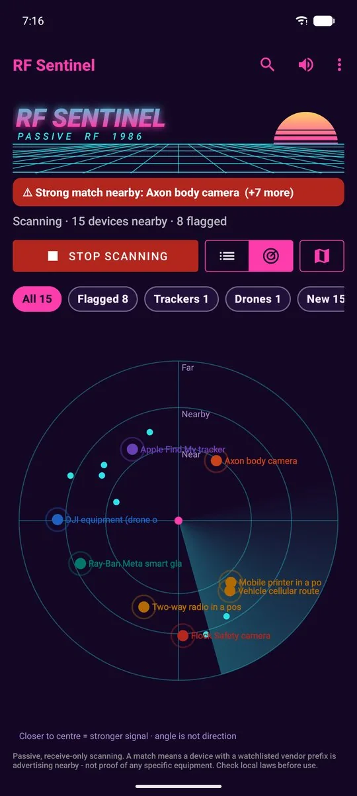
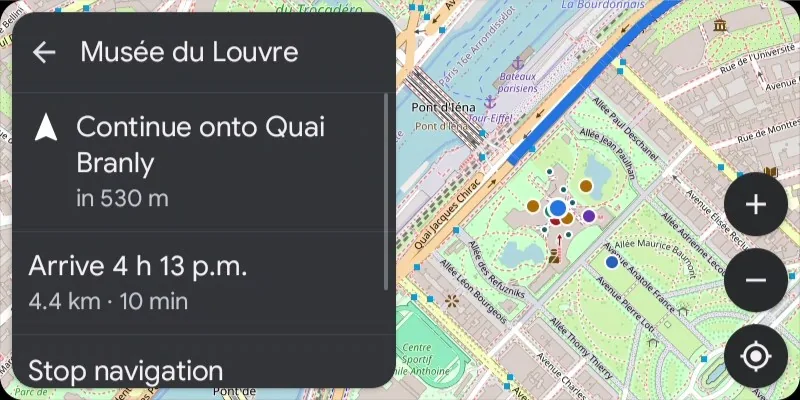
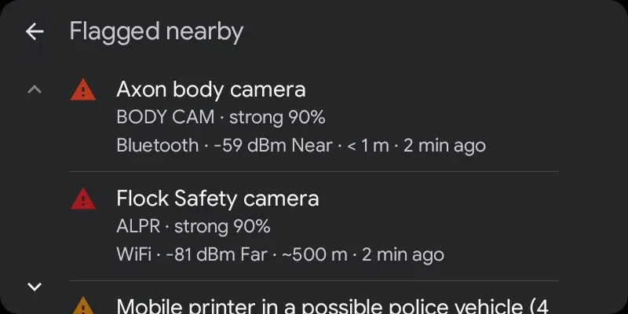

marcus@ctOS-2.0:~$ ./rf_sentinel --passive
RF_SENTINEL - police detector for Android
A free, open-source police detector for Android. It listens to the Bluetooth LE advertisements and WiFi beacons around you and flags police and surveillance equipment: body cameras, Flock and other plate-reader cameras, patrol-vehicle gear, trackers following you, Remote ID drones and camera glasses. It also watches the cell network for fake-tower (IMSI catcher) signs.
RX ONLYNo root · no Termux · no account · no analytics · GPL-3.0 · Android 8.0+
Signed APK from GitHub Releases. Not on Google Play. Install guide · Q&A


Police equipment it detects
| Category | Examples | How |
|---|---|---|
| Body cameras | Axon (TASER), Motorola / WatchGuard, Digital Ally, Zepcam, Vievu, Utility, Getac, in-car video | BWCDEVICE payload tag, company ID 0x034D, service UUIDs 0xFC81 / 0xFE6B / 0xFE6C, IEEE vendor prefixes |
| License-plate readers (ALPR) | Flock Safety, Genetec, Perceptics, Quercus, Tattile | Flock- SSIDs, Penguin- / FS- / FS Ext Battery BLE names, company ID 0x09C8, plus OpenStreetMap / DeFlock camera locations |
| Speed & red-light cameras | Fixed cameras mapped in OpenStreetMap | Offline map layer, warned about ~30 s ahead with the mapped limit |
| Audio sensors | Flock Raven gunshot detectors | 128-bit service UUIDs with short IDs 0x3100-0x3500 |
| Patrol vehicles | Two or more kinds of police-type gear moving together | RSSI correlation (Pearson r ≥ 0.6 over ≥ 8 s) across body cam, radio, in-car router, printer, rugged laptop roles |
| Public-safety gear | P25 / TETRA radio makers, in-car cellular routers (Sierra Wireless, Cradlepoint, Peplink, Inseego), in-car printers (Zebra, Brother), police radar makers, vehicle upfit, breath / drug screening devices | Company IDs, UUIDs, IEEE prefixes, Zebra factory-serial names |
| Trackers | AirTag & Find My, Google Find Hub, Samsung SmartTag, Tile | Separated-from-owner frames, then follow detection (default 10 min and 800 m with you) |
| Drones | Any ASTM F3411 / FAA Remote ID broadcaster (DJI, Skydio, Autel, Parrot...) | Decoded Remote ID over BLE and WiFi: serial, position, altitude, speed, heading, operator location |
| Camera glasses | Ray-Ban Meta, Snap Spectacles, Vuzix, HeyCyan-based glasses | Luxottica 0x0D53, Snap 0x03C2, Vuzix 0x060C, Meta UUIDs |
| Fake cell towers | IMSI catchers / cell-site simulators | Test MCCs, sudden 4G→2G, cloned or reserved cell IDs, unexpected networks (no root) |
Every match shows its evidence, its source and a confidence tier: weak (< 50), probable (50-79) or strong (80+). Full rules: how detection works and the signature reference.
What happens to every packet
Illustrative trace: actual scores depend on what each device advertises. The app logs the evidence the same way on each device's detail screen.
Features
Live list & radar
Every device heard in the last 3 minutes with vendor, type, radio, RSSI, rough distance and NEW / ★ / FOLLOWING badges. Flagged devices sort first. Filter chips with live counts.
Alerts
Sound, vibration pattern per tier (1 / 2 / 3 pulses), spoken announcements through the phone's TTS, discreet mode, floating threat bubble over Waze or Google Maps.
Map & traces
OpenStreetMap with your GPS trace, devices placed where their signal peaked, history heatmap and timeline, offline known-camera layer.
Android Auto
Police alerts on the car screen as messages read aloud (reply "mute"), and an RF Sentinel screen with threats, cameras ahead, recent alerts and Scan / Mute buttons. The full car app with live map and navigation runs on Google's Desktop Head Unit. Details
Auto start in the car
Starts when the phone connects to your car's Bluetooth or Android Auto, stops when you leave.
Tools
Cell towers (serving and neighbour cells, IDs, channel, signal, history, optional map layer and change alert) and WiFi channel / spectrum analyzers for 2.4, 5 and 6 GHz.
USB WiFi adapters
ALFA AWUS036ACS, AWUS1900, AWUS036ACM, AWUS036H, AWUS036NH / NEH and AWUS036NHA (experimental), TP-Link Archer T3U and other RTL8812BU dongles - 2.4 GHz, and 5 GHz on the AC adapters - in receive-only monitor mode over OTG, no root: no scan limit, longer range, devices connected to networks, and the network names devices ask for. Details
ESP32 boards
OUI-Spy over USB OTG or Bluetooth, GhostESP and Marauder over USB (dual-band on ESP32-C5, or through a Flipper Zero with a BFFB). The board's detections merge into the app. Details
Device details
Evidence, identity, decoded protocol data, signal graph, Locate mode (beeps faster as you get closer), history and the raw advertisement.
Export
CSV, JSON, KML, GPX, GeoJSON. Everything stays on the phone until you export or share it.
13 themes
Including DedSec (Watch Dogs 2) and fsociety (Mr. Robot) fan themes with animated terminal headers, Night Drive red HUD, Night Vision, Amber CRT.
Screenshots








Screenshots use made-up demo devices run through the real detection pipeline.
Compared with other options
| RF Sentinel | Crowd-reported apps (Waze) | Phone's built-in tracker alerts | |
|---|---|---|---|
| Price | Free | Free | Free |
| Open source | GPL-3.0 | No | No |
| Works where nobody reported | Yes, reads the equipment's own signals | No, needs other drivers | Trackers only |
| Account / tracking | None | Location shared with the service | Phone account |
| Install | Regular APK | App store | Built in |
| Bluetooth LE / WiFi signatures | Yes | No | Trackers only |
| Police / ALPR / body cam rules | Yes, sourced | User reports | No |
| Remote ID drone decode | Yes | No | No |
| Fake cell tower signs | Yes | No | Android 15+ only (network notifications) |
| Android Auto | Yes, alerts and a status screen | Yes | No |
Crowd-reported apps and RF Sentinel work well together: one knows what other drivers saw, the other hears the equipment itself.
Guides
Detect police with Android
Body cams, radios, patrol-vehicle kits, e-ticket printers.
Flock & ALPR cameras
Radio signatures plus the OpenStreetMap / DeFlock camera map.
Stingray / IMSI catcher
What a non-rooted phone can and can't see.
AirTag & tracker detection
Find My, Find Hub, SmartTag and Tile on Android.
Remote ID drone detector
Drone and operator position from the broadcast.
Smart glasses detector
Ray-Ban Meta, Spectacles, Vuzix nearby.
Compared with other tools
Flock You, OUI-Spy, Wardrive Go, Fieldwatch, AirGuard and more, and which ones work together.
Privacy
- Receive-only. The app never transmits, jams, spoofs or connects to the devices it detects.
- No accounts, no cloud, no analytics. Detections live in a local database excluded from cloud backup.
- Network use: OpenStreetMap map tiles and camera data (Overpass API, DeFlock CDN), and in Android Auto, Nominatim search and OSRM routing, only when used. Those servers see your IP and the area or route, never your scans.
- Data leaves the phone only when you export or share it.